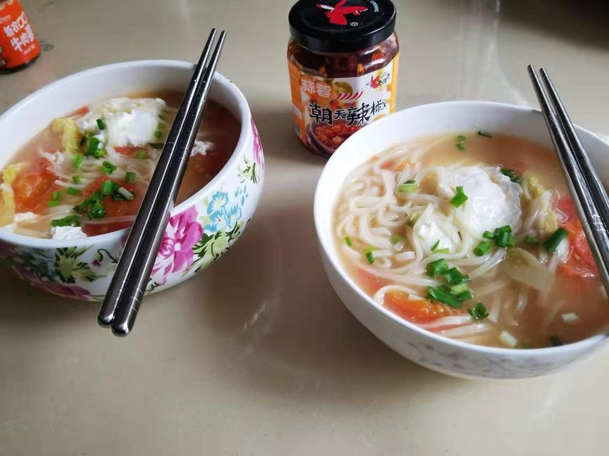
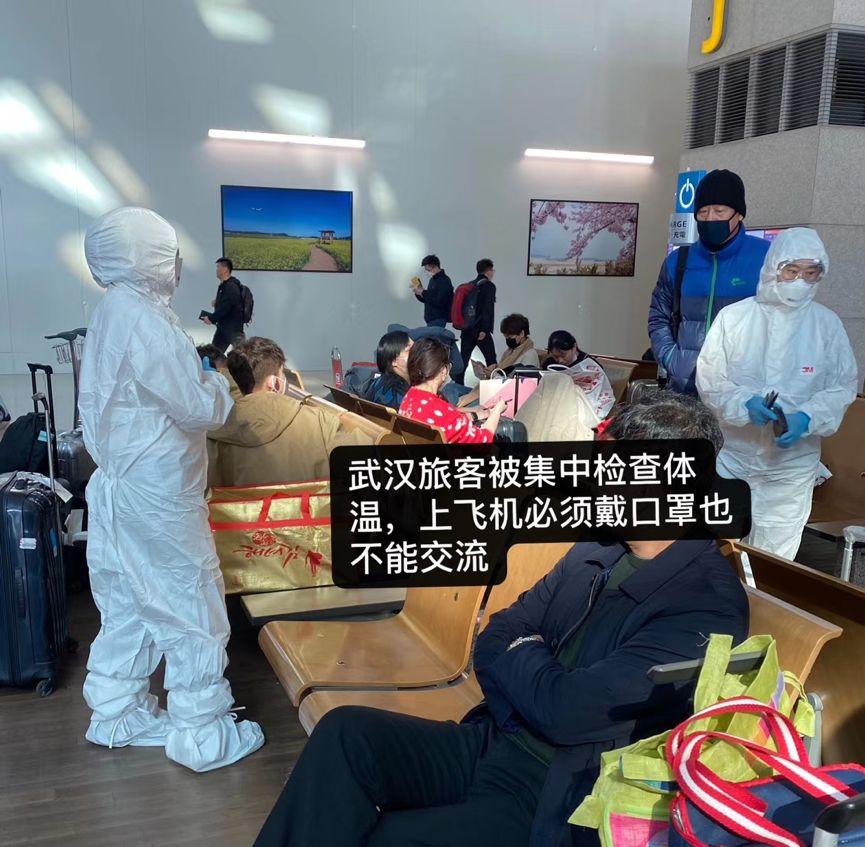
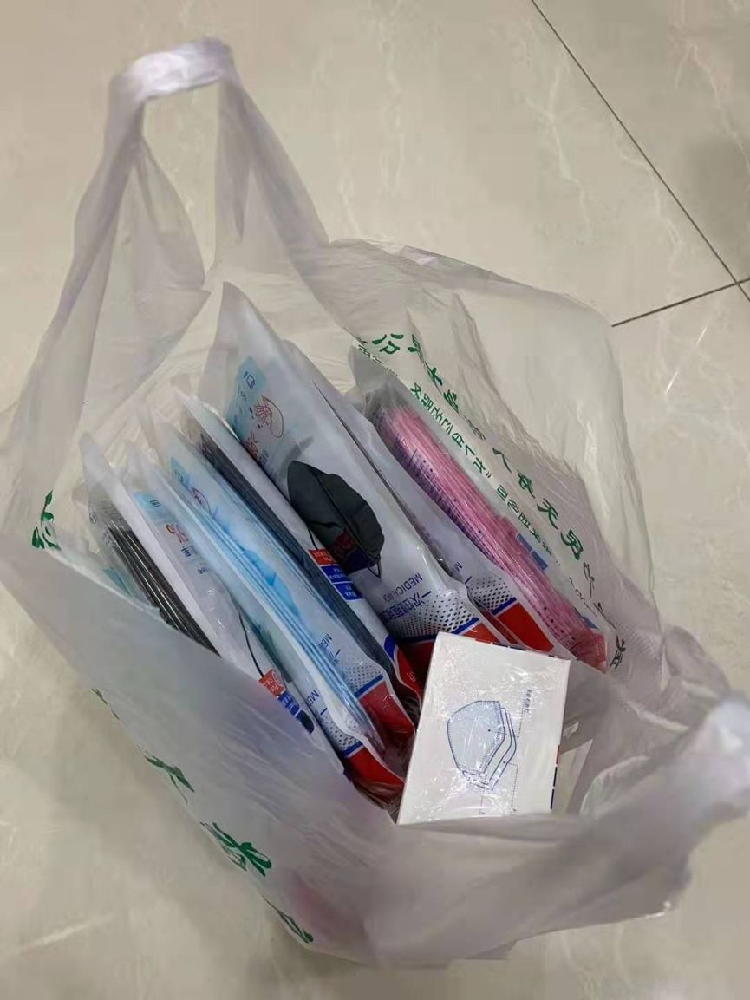

封城后，武汉人在经历什么
原文链接 备份链接 1月23日凌晨，武汉宣布自10时起，全市的航空、铁路、城市公交、地铁、轮渡、长途客运暂停运营，无特殊原因，市民不要离开武汉。新型冠状病毒肺炎，正考验着这座九省通衢的特大城市。 此后24小时，真实故事计划访问了几位选择留 …
“
父母都是医疗人员，父亲一直在接诊，母亲负责护士相关的所有工作。这几天只回过一趟家，除夕那天，我一个人在家吃年夜饭。

1月23日凌晨两点。
武汉市新型肺炎防控指挥部发布通告，自2020年1月23日10时起，全市城市公交、地铁、轮渡、长途客运暂停运营；无特殊原因，市民不要离开武汉，机场、火车站离汉通道暂时关闭。恢复时间另行通知。
自此，武汉封城。
在这段时间，武汉市民的日常生活是怎样的，全民故事计划征集到8位武汉市民的生活日常，以下皆为当事人的口述：
“我只睡了四个小时，心有余悸”
陈女士，32岁
新媒体策划
家住武汉市汉阳区
我妈妈是12月因为血栓住院（在协和西院神经内科），12月30号我妈回家和我说，神经内科一天收了大量病人。
我之前每天去医院看望的情况和她描述的情况对比，之前是神经内科确实有挺多病人，但是病床不是那么紧张，30号当天，据说走廊上都住满了人。
第二天，我上班的时候，同事发来一篇武汉发现SARS的文章，我觉得是谣传，但我听到是SARS还是点进去看了一下。
我开始向周围朋友求证，一个朋友之前在报社工作，她十分钟后回复我说这个消息是真的，然后我同事当时也联系了自己的医生同学，得到的消息是，极大可能是SARS的冠状病毒，但是目前是散发病例，也无需太过惊慌。
从12月31日，我每天都在关注这个事情的发展走向，在1月19号之前，我因为武汉的数字没变而焦虑，在19号之后，我因为数字开始突增又非常焦虑。
1月19号那天，我家吃了小年的团圆饭，外地的亲朋好友也都计划在之后几天赶回武汉（后来因为事情变化，都陆续退了车票机票，无法返汉），吃完年饭后，我妈妈因为要办材料，又通知去了4医院。
据她所说，协和西院在一月大概是十号左右，她去开药的时候医生就开始进行了武装，那时候肺炎的病情0消息，有的只有在网上的零星半点的小道消息。
封城后，我和父母留在家中，每天都在关注网上的消息，很担心病毒变异。现在我妈妈已经恢复健康了，活蹦乱跳的，想起来还心有余悸，如果是现在住院，简直不堪设想。
最近睡得不好，昨天四点睡的，八点就醒了，只睡了四个小时，爬起来想出门吃个汉堡，但除了超市，所有商业都已经关门。
“想到的第一件事，是囤食物”
彭先生，37岁
演出公司负责人
家住武汉市青山区
我于1月15日左右抵达武汉站，返汉之前，公司群里还有人问在武汉的同事“武汉肺炎不严重吧？”，在汉同事表示没什么事情。
因此，我毫无防备心地回到了家中。
1月16日，我还接待了北京抵汉出差的同事，在汉街吃了个饭，街上也没什么异动。1月20日早晨，我睁眼发现网上的确诊数量猛增，意识到不对劲。
11点，我使用“京东到家”下单，购买附近药店的八包口罩（都是一次性普通口罩，附近没有N95口罩），同时，因为警觉，我还在京东超市又买了一些零食。做年货。
21日，我也给父亲做了思想工作，让他千万别出门，但我爸爸还是在22号被舅舅拉去汉正街逛街买衣服，好在汉正街市场里除了商户老板之外，人并不多。

1月21号，武商量贩，虽然有人戴口罩，但还是正常打年货的状态，无人哄抢
1月23日凌晨两点，武汉发布封城通告，这时我在睡梦中，早晨九点一睁眼，已经吓懵了。
我妈之前和同事开车去宜昌出差， 23日返汉时，高速入口畅通无阻，并没有测体温的，但是对出城查得严格一些。
现在，我和父母待在一起，女友在上海。女友每天都问我家里东西还够不够，需不需要再买一些，但是现在市内物流困难，在淘宝买的东西也不一定能快速寄到。
之前来武汉的同事，我们这阵子没有再联系过，不知道他们会不会觉得是一种“劫后余生”的经历。不敢问，也不敢细想。
“孩子不在身边，侥幸又难过”
grace，32岁
采购
家住武汉市硚口区
封城后，我和家人在家呆了三天，没有下楼，因为之前购置年货，囤了不少菜，家里一共四口人，还能吃一阵子。
因为无法出门，老人就在房间里看电视，偶尔玩手机。我和老公的状态比较无聊，每天都睡到中午才起来，今天吃的早午餐是西红柿鸡蛋面，很清淡。这个年过得不是很有年味。

封城后，在家煮简单的面条过节
目前，小区内，人际关系网内接触到的，尚没有病例，所以相对网上的传言来说，心态还算比较稳定。
暂时还没有网购的打算，也没有特别急需的东西，口罩之前也囤了一些，因为不出门，所以也没有口罩消耗。
万幸的是，三岁的孩子已经在元旦时被我送回了广西老家，当时因为网上有传言说肺炎会传染，而我的身份证和驾照需要更新，所以回了一趟广西老家。
本来，我想着过年时回老家再把孩子接回来，没想到，因为封城，暂时不能出去接孩子了。孩子不在身边，有些侥幸也很难过，但也没有别的办法了。
“女儿在外地，比我们还要着急”
邹女士，58岁
退休人员
家住武汉市汉阳区
大概在12月底左右，女儿就告诉我武汉有疑似传染性肺炎，让我戴口罩，我平时有戴布面防风口罩的习惯，也没太注意。后来在女儿的强烈要求下，我去药店断断续续买了几大包一次性医用外科口罩。
每天出门戴口罩时，周围的人都会嘲笑一下，说搞得这么严重，又没什么事情，大家还是在一个马上要过年的欢乐氛围里，基本无人警觉。而且我住的区域离事发地汉口有一段距离，所以心理上也还好。
1月19日，女儿告诉我说她退了回武汉的票，准备和我在外地见面旅游，1月21日，情况急转直下，我也退了离开武汉的票，和女儿取消了旅游计划。
1月23日封城开始，大家心理上突然都崩溃了，平时和我一起跳舞的广场舞姐妹都在家里不敢外出，也没有什么看娱乐节目的心思。家里要是有小孩子的就更紧张一些。
女儿基本每天都打电话来询问家里的情况，让我不要下楼，不要乱跑。我以前每天都喜欢下楼散步，哪怕是下雨也会在停车场走走，现在没法出门，感觉真是憋得慌。
我老公情绪比我稳定一些，还在家里给鱼缸换水，但我什么也不想做，动不动就在阳台上站着看外面。
平时车水马龙的街上，现在空无一人。
今天社区又给我们发了一个“汉阳区密接人员信息简表”，让我们注意。
现在我按照女儿说的，通过盒马之类的下单一些食品，却都显示无法送达，很多都停了，要买东西只能亲自去，但我又不敢出门。
我准备明天再试试，看盒马能不能顺利下单。
“回不了家，身为武汉人受到歧视”
园哥，27岁
设计师
家住武昌
之前肺炎的事情还没有那么严重时，我定好了票，春节去韩国首尔旅游。
1月21日早晨7点，我在天河机场准备登机，被要求脱掉外套检查体温，没有显示发烧，上飞机后，空姐全部戴上了N95，21号12点，我抵达韩国仁川机场。
到达韩国的武汉旅客被集中到一个出口，排队检查体温并被记录下来，还需要留下即将入住的酒店地址。韩国海关和机场的工作人员也都全部戴了口罩。
见到预约的地接后，对方说的第一件事情就是武汉的肺炎情况。对方告诉我们，韩方对此次疫情非常重视。
等地接把我们送回酒店，马上接到了韩方的旅行社的电话，说最近的韩国旅游全被取消，国外的人不会去中国，中国人也禁止出来。
到了22号早上，我出门又听说有两例武汉旅客被检查出疑似病例，韩国人都戴起了口罩，路边小小的药店全部挤满了中国旅客，口罩所剩无几。
一群人去吃饭，韩料店里面坐满了中国人，大家的话题都停留在武汉肺炎。
到了23号，武汉宣布封城，一早上我还在想着我起码能回家和家人团聚，不管他们多么不想我回去躺这趟“浑水”，但是终究是要回去的。
23号下午，我接到通知，航班改签，“现在没有航班去武汉，都绕过武汉飞。”
我们被安排凌晨到郑州的航班。但是到了郑州要住哪，携程也给不出解决方法，“现在每天的情况都有变化，我们只能等。”
24号，武汉封城第二天，武汉在国外看来就像一座瘟疫城。我看见中国游客在药店里面成箱地买口罩，并且药店里面用中文标识了韩国的k94和k95是一样的。
晚上，我再联系携程，对方还是让我们安心等待，他们有一个同事也是武汉的，即将抵达郑州，有了情况会通知我们。

26日，我们被安排上韩国飞往郑州的飞机，武汉的旅客全部被集中坐在飞机尾部，大家都戴着口罩，不允许互相交流。
上飞机前，我们去换登机牌和托运时，韩国人自动戴口罩和面罩，也不愿意与我们多说话，只盼着我们赶紧离开。
到郑州后，我们不能立刻拿到自己的行李，要进行检测，具体几天能拿到也不清楚。什么时候能解封，什么时候能与家里团圆。
这几天，我已经连续哭了好几场。
“机动车禁行，后面的生活怎么保障”
FEELING，33岁
非盈利组织工作人员
家住武昌中百路
1月17日，腊月23，小年夜，武汉还是一片祥和，单位开年会，路上戴口罩的人很少。
1月19日，腊月25，我在单位附近的药店去买了15包口罩，此时药店的口罩还很充足。
1月20日，腊月26，此时年轻人慢慢意识到问题的严重性，上班路上已经有人开始戴口罩。
1月22日，腊月28，打电话给家里外地的亲戚，告诉他们原定于在乐福园的年饭被取消，带着孩子不要回武汉了。

武汉人自嘲的“年货”
1月23日，腊月29，武汉封城，一下子大家害怕了，口罩已经成了紧缺品，害怕出门，但还是开车去给父母送了口罩，去给孩子囤了奶粉，买了一堆菜回家。
1月24日，大年三十，武汉封桥，武汉三镇被隔离，我已经不敢出门，那一整天，我都在不停地打电话发信息给身边的亲人朋友，让他们一定不要出门。
1月25日，大年初一的凌晨，机动车限行，菜场都关门了，大家都不知道后面的生活怎么保证，网上说社区配备了车辆，社区会统计小区情况。至今，没人通知。
“武汉是一座有板有眼的城市”
囧小米，34岁
财务
家住武汉市江汉区
我本人是非常地道的武汉人，出生在汉口商职医院，成长在长江边，从出生到现在基本没有离开过这片土地。眼见武汉这么多年的发展，从自嘲的“脏乱差”到如今能评上文明城市，真的是一步一个脚印，挺不容易。
2019年，武汉召开国际级运动赛事——军运会，迎来送走了各国军人运动员，我们都想着武汉是否马上就要成为一个一线城市，对未来几年的发展充满了畅想。
12月底，我们开始接收到华南海鲜市场不明原因肺炎的相关新闻，但周围所有人并没有予以过多的关注。
直到1月份，表哥没来吃年饭，我才得知他已经持续多天发高烧，呼吸道灼疼，病程初期去中心医院看病，仅开了奥司他韦，医生让回家休息。由于实在不适，在药店又买不到消炎药，我从家里拿出两盒头孢给姨妈，让她带回去。
当天晚上，表哥因高烧不止，还是到中心医院急诊，当晚拍CT，后期确诊肺炎(非新型冠状病毒肺炎)，目前仍在同济住院治疗。
因为过年，公公囤了不少吃的在家里，大概可以吃到大年初十。现在小孩在家里，后续需要出去补充一些食物做正餐的，不过还要看到时候市内交通通行情况而定。
我觉得挺不好意思说自己是灾民。
在我心目中，武汉是一座有板有眼的城市，我们的医疗不差，教育资源丰富，经济也在快速发展中，缺的不是钱，真正缺的是不会因为犹豫就错过最佳决断时机，更不会因为面子拒绝外来救援物资。
“爸妈站岗待命，三天没回家”
忘川，23岁
职业未透露
家住武汉市蔡甸区
我是武汉本地人，大学毕业后回到老家，一直在蔡甸工作。1月15号，我放假回到家，直到20号左右才听说这个新型肺炎。那个时候，大家还不以为意，街上也没有人戴口罩。
一直到22号，腊月二十八，我们才开始重视，街坊邻居开始购买口罩，并且准备了一些蔬菜。1月23号，武汉宣布“封城”，紧接着，传来了要在我们蔡甸建立“小汤山”医院的消息。那个地方离我们这开车不到二十分钟。
一开始大家都很震惊，没想到情况这么严重，得知一些大医院的就诊情况后，觉得这很有必要，也有些安心，至少能够保障就医。
我的父母都是从事医疗工作的，经常会听到医院床位不够、仪器缺失的消息，所以大家都知道建立这个医院确实很紧急。这些天，我父母都在医院值班，三天就回来一趟家，其他时候都是在医院专门安排的休息区过夜。
在小地方的医院，出现了疑似新型肺炎的患者一律要送至大医院就医。父母随时待命，父亲负责接诊，母亲负责跟护士相关的所有事宜。除夕夜当晚，父母也没有回来。我一个人在家做饭，家里有蔬菜，一个人吃完年夜饭，打了一会儿游戏，然后看看书，睡觉。
外面满冷清的，但除夕夜那晚还是有人放烟花，希望这一切能早点过去。
征 集
全民故事计划将持续关注这次疫情，不仅仅是武汉。我们将持续关注湖北其他地区普通人正在面临的生活。
如果你身在湖北，我们#向你征集#你此刻的生活日常，你可以在后台分享给我们，讲述你的经历。我们将在后期，陆续发布。
全民故事计划将在下一期推出：身在黄冈：此刻的我在经历着什么。
撰文 | 李小婧
编辑 | 蒲末释
▼
全民故事计划正在寻找每一个有故事的人
讲出你在乎的故事，投递给
tougao@quanmingushi.com
故事一经发布，即奉上千字300元-1000元的稿酬

请您支持一下全民故事计划，点击在看
原文链接 备份链接 1月23日凌晨，武汉宣布自10时起，全市的航空、铁路、城市公交、地铁、轮渡、长途客运暂停运营，无特殊原因，市民不要离开武汉。新型冠状病毒肺炎，正考验着这座九省通衢的特大城市。 此后24小时，真实故事计划访问了几位选择留 …
原文链接 备份链接 以下文章来源于南方都市报 ，作者南方都市报 公交、地铁、轮渡、长途客运暂停运营，机场、火车站离汉通道暂时关闭……除夕至，武汉人今年的春节注定要不一样了。 农历2019年的最后一天，武汉市卫健委通报关于武汉市肺炎疫情情 …
原文链接 备份链接 文 | 王彦入 王丹妮 程静之 殷盛琳 李晓芳 周航 叶雯 曾宪雯 编辑 | 王珊 陶若谷 33岁的刘科戴上两层口罩独自走进地铁，夹杂在路人中间。像他这样拉着行李箱的人并不少见，彼此间默契地保持着距离。三天前，他刚刚从 …
原文链接 备份链接 作者 | 薛芳 孙宏超 相欣 安然 马关夏 李越 编辑 | 康晓 出品｜深网·腾讯小满工作室 欢迎下载腾讯新闻APP，阅读更多优质资讯 平平安安就是年。 突袭而至的新病毒能阻止很多中国人在这个春节里团聚，但没有什么能阻 …
原文链接 备份链接 作者 | 王晓 出品 | 棱镜·腾讯小满工作室 欢迎下载腾讯新闻APP，阅读更多优质资讯 对于湖北人民来说，2020年的这个除夕夜太不平常了。 “药店大姐告诉我们，口罩绝不涨价，不发国难财，而且告知我们第二天早7点开 …